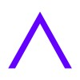
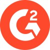

Profile
David Sola-Adebiyi
Product, technology, and people.
About
I'm David, a computer science student at Illinois Tech. I'm curious about how things work, and I love the challenge of solving a problem or fixing something that isn't working. I bring that curiosity and a willingness to put in the work to everything I take on.
Working closely with clients has taught me to listen, ask better questions, and turn their needs into practical solutions. I enjoy leading teams and connecting the technical and business sides of a project, helping people understand each other and move an idea forward.
Featured Projects
Selected workMore Builds
Smaller projectsExperience & Education
Experience
| # | Role / Organization | Location | Dates |
|---|---|---|---|
| 1 |  Developer InternTrane Technologies · Technical Documents Team Role highlights
| Chicago, IL | May 2025 – Dec 2025 |
| 2 |  Product Management InternG2 · Discovery Program Role highlights
| Chicago, IL | Aug 2023 – Dec 2023 |
| 3 | Event Production ManagerIllinois Tech · Events Services Role highlights
| Chicago, IL | May 2024 – Present |
| 4 | Computer Science Teaching AssistantIllinois Tech · College of Computing Role highlights
| Chicago, IL | Aug 2024 – May 2025 |
Education
School of Computing · B.S. in Computer Science
GPA: 3.90 / 4.00
6× Dean’s List (top 5%) · M.A. & Lila Self Academy Award for Leadership · Upsilon Pi Epsilon Honor Society
Product & People
- Philosophy of Design
- Marketing Fundamentals
- Industrial Psychology
- Introduction to Psychopathology
- Technical Communication
Math & Stats
- Probability and Statistics
- Elementary Linear Algebra
- Discrete Structures
- Multivariate and Vector Calculus
- Introduction to Differential Equations
Software & Systems
- Data Structures and Algorithms
- Database Organization
- Operating Systems
- Introduction to Information Security
AI
- Introduction to Artificial Intelligence
- Trustworthy AI
- Computers and Society
Beyond the Resume
Life, people and everything in betweenContact Me
Connect with me on LinkedIn, explore my work on GitHub, or send me an email.